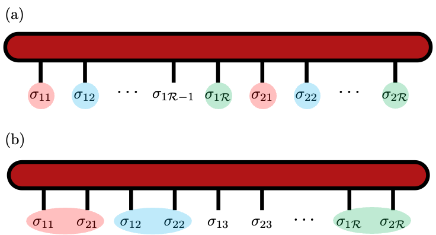
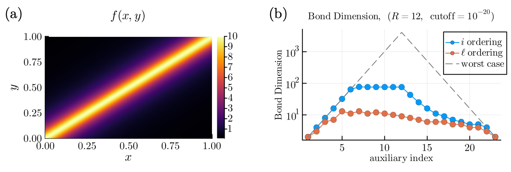

Method
QTT
QTT（Quantics Tensor Train）は，連続変数の関数や細かい格子上のデータを， 2 進数に基づく小さなインデックスへ分解し， Tensor Train として表す方法です． 関数が持つ構造を長さスケールごとに分けて見ることで， 指数的に細かい解像度を少数のパラメータで扱える場合があります．
連続関数のテンソル化
連続変数の関数は，そのままでは計算機で扱えません． そのため，まず変数を離散化し，関数値を配列として保持します． たとえば 1 変数関数 $f(x):x\in[0,1)\to\mathbb{C}$ を $d$ 個の格子点 $x_1,x_2,\dots,x_d$ で離散化すると， 関数は次のようなベクトルとして表されます．
多変数関数 $f(\boldsymbol{x}):\boldsymbol{x}=(x_1,x_2,\dots,x_N)\in[0,1)^N\to\mathbb{C}$ の場合は，各変数を格子化することで $N$ 階テンソルが得られます．
しかし，単純な格子化では次元 $N$ に対してテンソルの要素数が指数的に増えます． また，テンソルの低ランク構造は，どのようにテンソル化するかに強く依存します． QTT は，2 進数表示を用いてこのテンソル化の仕方を工夫する方法です．
Quantics表現
Quantics表現では，1 つの連続変数 $x\in[0,1)$ を $R$ 個の 2 値インデックス $\sigma_1,\sigma_2,\dots,\sigma_R\in\{0,1\}$ で表します．
これは区間 $[0,1)$ を $2^R$ 個の等間隔メッシュに分けることに対応します． 通常の離散化では $2^R$ 個の値を 1 本の長いベクトルとして見ますが， Quantics表現では 2 値インデックスを $R$ 個持つテンソルとして見ます．
各桁は異なる長さスケールを担当します． $\sigma_1$ は $1/2$ スケール，$\sigma_2$ は $1/2^2$ スケール， 最後の $\sigma_R$ は $1/2^R$ スケールの情報を表します． この「桁ごとの分解」が，QTT の圧縮性を理解するうえで重要です．
Quantics Tensor Train
Quantics表現で得られた $R$ 階テンソルを Tensor Train として低ランク近似したものを， Quantics Tensor Train (QTT) と呼びます [1] [2]．
中間のTTコアはおおよそ $2\times\chi_{\ell-1}\times\chi_\ell$ のサイズを持ちます． ボンド次元 $\chi_\ell$ が小さく保てるなら， $2^R$ 点の関数値を，$R$ に比例する程度のデータ量で表現できます．
多変数QTTとインデックス順序
多変数関数 $f(\boldsymbol{x})=f(x_1,x_2,\dots,x_N)$ では， 各変数 $x_i$ を $R$ 桁の 2 進数で表します．
このとき，QTT は全部で $L=NR$ 個の 2 値インデックスを持つ TT になります． 重要なのは，これらのインデックスを TT 上にどの順番で並べるかです． このページでは，次の 2 つの呼び方に統一します．
- Sequential: 変数ごとに全ビットを並べる順序．2変数 $x,y$ の例: $x_1x_2\cdots x_R,y_1y_2\cdots y_R$．
- Interleaved: 同じ長さスケールのビットを隣り合わせる順序．2変数 $x,y$ の例: $x_1y_1,x_2y_2,\dots,x_Ry_R$．
TTのボンド次元は，インデックスの並び順にも依存します． 多変数関数では，同じ長さスケールの変数同士を近くに置く Interleaved のほうが， より低ランクになりやすい場合があります．

低ランク構造
$N$ 変数関数を各変数 $R$ 桁で Quantics表現すると， QTT の長さは $L=NR$ になります． QTT 全体のデータ量は，各 TTコアの要素数の和として見積もれます．
厳密なTTを作る場合，最大ボンド次元は一般に指数的に大きくなります． その場合，QTTを使う利点はありません． 一方で，許容誤差の範囲でボンド次元を小さく保てるなら， 元の関数は QTT において低ランク構造を持つと言えます． 低ランク構造は関数そのものだけでなく，テンソル化の方法やインデックス順序にも依存します．
QTTで圧縮できる例
QTTで低ランクに表せる典型例はいくつか知られています． たとえば指数関数は，2進数表示を代入すると各桁に分離した積になります．
そのため，指数関数はボンド次元 1 の QTT として厳密に表せます． 三角関数は指数関数の和として表せるため，典型的にはボンド次元 2 で表せます． また，虚時間Green関数のように指数関数の和で書ける対象も，QTTと相性がよい例です [3] [4]．
もう一つ重要な例は，単位行列やデルタ関数的な構造です． 2変数 $x,y$ を同じ桁数で Quantics表現すると， 離散的な $\delta(x-y)$ は同じ桁同士のデルタの積として表せます．
このような構造では，Interleaved順序で同じ長さスケールのビットを近くに置くことが自然です． 対角付近にピークを持つ関数でも，Interleaved順序にすることで Sequential順序より小さなボンド次元に抑えられることを確認します．

QTT形式のRiemann和
QTT形式の利点は，関数を圧縮して保存できるだけではありません． 連続関数をQTTで表しておくと，Riemann和に基づく数値積分も TTコアの縮約として計算できます． ここでは簡単のため，区間 $[0,1)$ 上の1変数関数を考えます．
積分区間を $2^R$ 個の等間隔メッシュに分割すると，格子幅は $h=2^{-R}$ です． Riemann和は次のように書けます．
ここで $F_{\sigma_1\sigma_2\cdots\sigma_R}$ をQTT形式で表すと， 積分は全てのローカルインデックスについて和を取る縮約になります．
つまり，QTT形式では各コアの物理インデックス $\sigma_\ell$ について平均を取り， 残ったボンドインデックスを縮約すれば積分値が得られます． 通常のRiemann和では $2^R$ 個の格子点を全て足し上げますが， QTTが低ランクであれば，必要な計算量はボンド次元と長さ $R$ に支配されます． そのため，指数的に細かいグリッド幅 $h=2^{-R}$ を使いながら， 関数値を全点で明示的に保持・総和するコストを避けられます．
もちろん，これは関数がQTTで低ランクに表せる場合に有効です． その場合，Riemann和そのものの離散化誤差は $h=2^{-R}$ に従って小さくなり， さらにQTTの縮約により，細かい格子を使うためのメモリと総和のコストを抑えることができます．
研究との関係
私の研究では，ファインマンダイアグラムや高次元関数が QTT形式でどの程度圧縮できるか，またどのような変数系ならより低ランクになるかに興味があります． 実際には全ての格子点を評価してからTT分解することは難しいため， Matrix Cross Interpolation や TCI のようなサンプリングベースの手法が重要になります．
参考文献
このページは，修士論文の第4章をWeb向けに整理したものです． 修士論文PDFは こちら から確認できます．
- I. Oseledets, Doklady Mathematics 80, 653 (2009).
- B. N. Khoromskij, “O(d log N)-Quantics Approximation of N-d Tensors in High-Dimensional Numerical Modeling,” Constructive Approximation 34, 257 (2011).
- H. Shinaoka, M. Wallerberger, Y. Murakami, K. Nogaki, R. Sakurai, P. Werner, and A. Kauch, Physical Review X 13, 021015 (2023).
- H. Takahashi, R. Sakurai, and H. Shinaoka, SciPost Physics 18, 007 (2025).